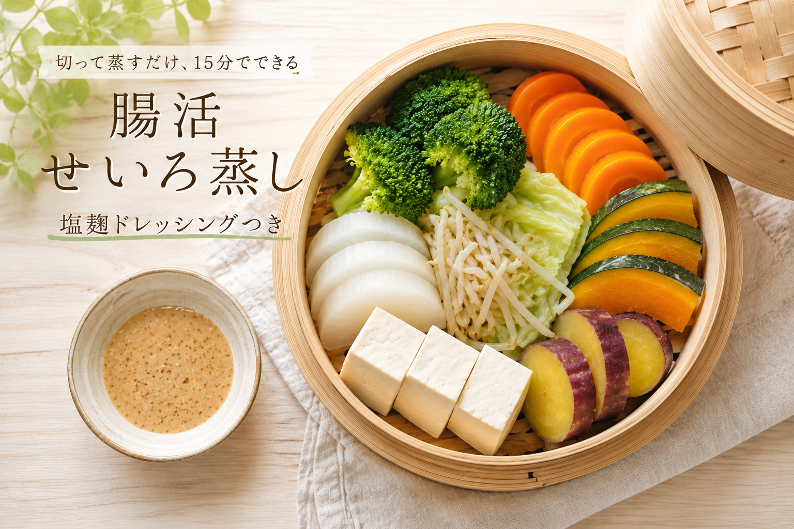

【腸活レシピ】毎朝のヨーグルトにのせているフルーツ4つと組み合わせ方
火を使わず器ひとつでできる腸活朝ごはん。プレーンヨーグルトにのせているバナナ・ぶどう・冷凍マンゴー・ドライプルーンの理由と、その日の状態で選ぶ組み合わせ3パターンを元看護師が紹介します。
続きを読む →発酵食品を使った、簡単・時短の腸活ごはん。特別な食材は使いません。毎日続けられるレシピを集めました。
RECIPE

火を使わず器ひとつでできる腸活朝ごはん。プレーンヨーグルトにのせているバナナ・ぶどう・冷凍マンゴー・ドライプルーンの理由と、その日の状態で選ぶ組み合わせ3パターンを元看護師が紹介します。
続きを読む →
みそ汁の具材を変えるだけで腸の調子が変わった。元看護師さきが毎朝続けている腸活みそ汁の具材とその理由。わかめ・きのこ・切り干し大根など、腸に効く組み合わせを紹介。
続きを読む →
忙しい平日でも腸活を続けるための作り置きレシピ3選。塩麹・味噌・甘酒を使った発酵食品おかずを週末にまとめて作れば、平日は乗せるだけ・かけるだけ。元看護師さきが実際に続けているレシピです。
続きを読む →
野菜・白身魚・鮭をせいろで蒸すだけ。発酵食品の塩麹を使ったドレッシング2種で、腸に優しいひと皿が15分でできます。
続きを読む →
塩麹は塩の代わりに使えて腸活にもなる万能調味料。麹・塩・水の3つで作れる自家製塩麹のレシピと、驚くほどしっとりやわらかい塩麹ゆでどりの作り方を紹介。
続きを読む →
納豆×キムチで善玉菌を爆増させる腸活レシピ。材料3つ・5分以内でできる超簡単な卵かけごはんです。便秘・肌荒れ・朝起きられない悩みに効果的。
続きを読む →